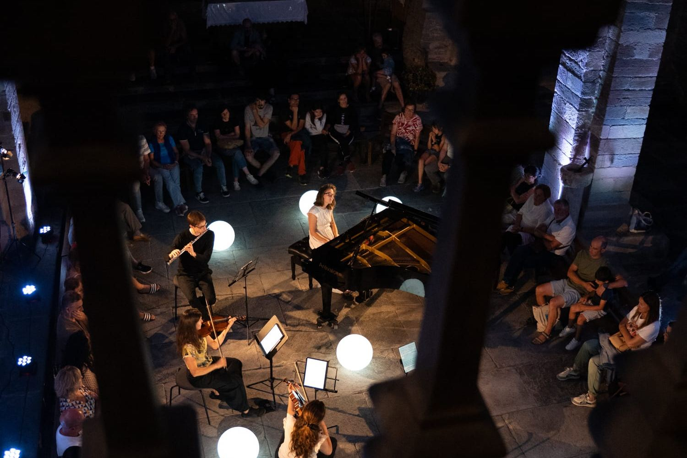

Agenda
Las fechas de la temporada de CreArtBox, el colectivo que co-dirijo. Para giras y disponibilidad, lo más rápido es el correo.
-
5–9 de octubre de 2026
Kuopio Conservatory, Kuopio (Finlandia)
Residencia: clases magistrales y taller de escena.
-
6 de octubre de 2026
Kamarimusiikkisali · Kuopio Music Centre, Kuopio
Concierto de la residencia.
-
30 de octubre de 2026
The DiMenna Center, Nueva York
«Currents». Serie de Nueva York, otoño. Producción nueva.
-
6 de noviembre de 2026
Rammelkamp Chapel · Illinois College, Jacksonville (Illinois)
Engelbach-Hart Music Festival. Gira.
-
11 de diciembre de 2026
The DiMenna Center, Nueva York
«Winterlight». Serie de Nueva York, invierno. Producción nueva.
-
28 de febrero de 2027
Comstock Hall, Louisville (Kentucky)
The Chamber Music Society of Louisville. Gira.
-
18 de abril de 2027
Saugerties, Nueva York
«Masked Sounds». Gira.
-
23 de abril de 2027
The DiMenna Center, Nueva York
«Pressure and Release». Serie de Nueva York, primavera. Producción nueva.
-
7 de mayo de 2027
The DiMenna Center, Nueva York
«Feverdream». Cierre de temporada. Producción nueva.
-
2–15 de agosto de 2027
Varias sedes, Asturias
Festival ADAR, VII edición.
-
28 de septiembre de 2027
Gettysburg Community Concert Association
Gira.
-
17 de octubre de 2027
The Chapel Restoration
Gira.